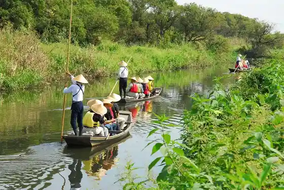
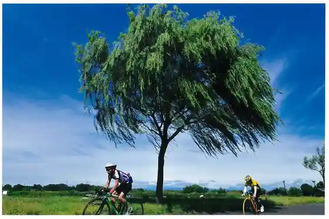

Gunma no Suigo Agebune Tanita Kawa Meguri
Itakura, Gunma · 0276-82-1111 · Official / source link

Raiden Shrine
Itakura, Gunma · 0276-82-0007 · Official / source link
Namazu Ryori (Kawazakana Ryori)
Itakura, Gunma · 0276-82-0032 · Official / source link
Watarase Yusuichi
Itakura, Gunma · 0282-62-1161 · Official / source link

Iitoando Kanto Kojo
Itakura, Gunma · 0276-70-4100 · Official / source link
Udon Cafe Harada (Itakura Kyuri no Hiyajiru Udon)
Itakura, Gunma · 0276-82-0063 · Official / source link
Uotoshi (Kawazakana Ryori)
Itakura, Gunma · 0276-82-0054 · Official / source link
Kobayashi Ya (Kawazakana Ryori)
Itakura, Gunma · 0276-82-0032 · Official / source link
Nozawa Ie (Kawazakana Ryori)
Itakura, Gunma · 0276-82-1018 · Official / source link
Hayashiya (Kawazakana Ryori)
Itakura, Gunma · 0276-82-0031 · Official / source link
Tanomoshi no Shidarezakura
Itakura, Gunma · 0276-82-1111 · Official / source link
Rizan Park
Itakura, Gunma · 0276-82-1111 · Official / source link
Tenmangu Shrine
Itakura, Gunma · 0276-82-0122 · Official / source link